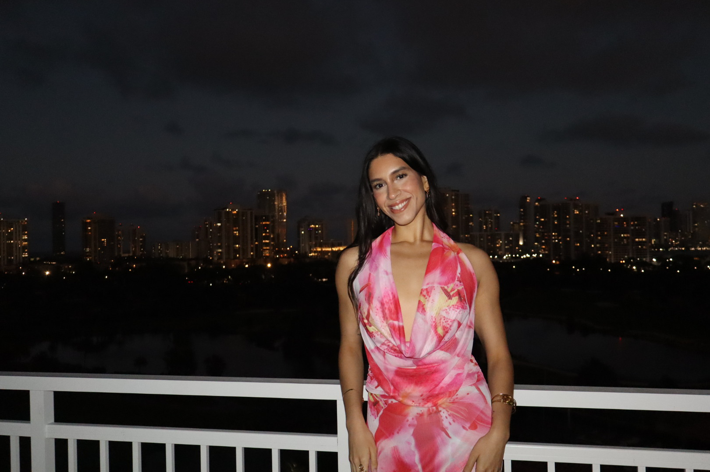
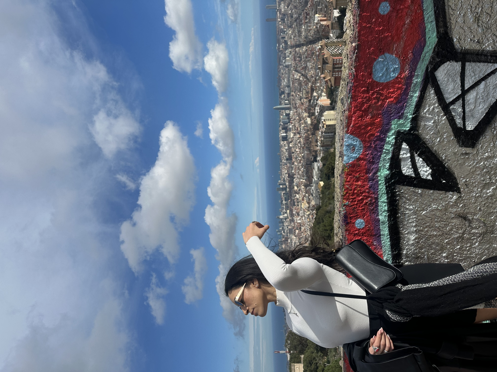
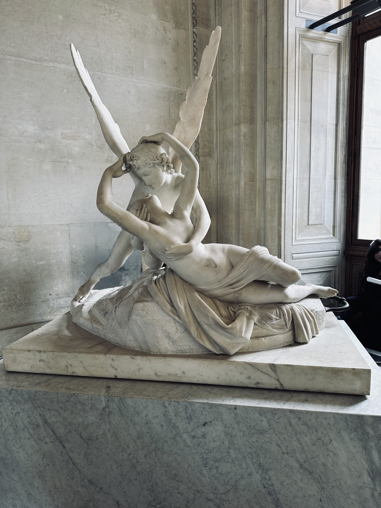
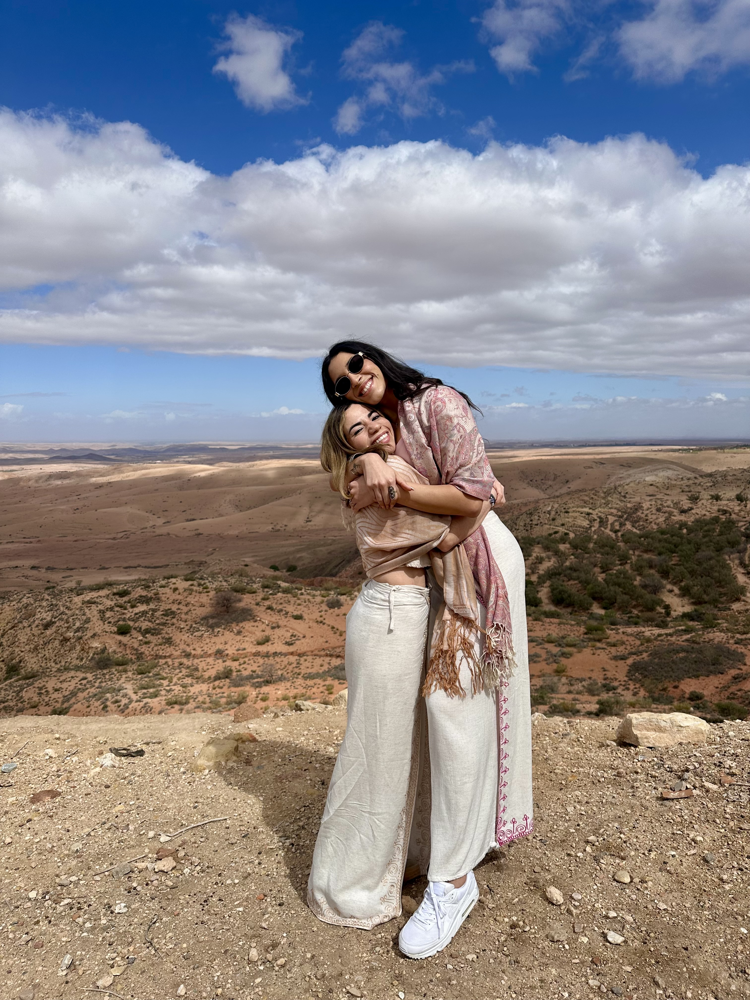

I love to travel and explore the world. My favorite city I have visited so far is Barcelona, although I also loved the architecture, museums, and art in Paris. One of my favorite memories was seeing Psyche Revived by Cupid’s Kiss by Antonio Canova at the Louvre. That sculpture will stay in my memory for the rest of my life.
When I am not traveling, you will usually find me at the gym lifting weights. I have a passion for fitness and bodybuilding. I have been active since I was seventeen and have been bodybuilding for the past four years. One day, I hope to compete.
One final thing to know about me is that I love my friends and family. They make me incredibly happy, and when I am not traveling or at the gym, I am usually spending time with the people I love most.



I’m a Communications student at the University of Central Florida with a strong interest in marketing, brand storytelling, and creative strategy. I’m especially drawn to work that blends aesthetics with intention—whether that means building social content, shaping a visual identity, or finding new ways for brands to connect with people in a way that feels current and meaningful.
Over time, I’ve developed experience across digital media, public relations, social media marketing, and licensing, which has given me a well-rounded perspective on both the creative and operational side of brand work. I enjoy projects that require both imagination and organization, and I’m most inspired by ideas that feel polished, purposeful, and visually engaging.
As someone who is fluent in both English and Spanish, I value communication that is thoughtful, adaptable, and audience-aware. Long term, I hope to continue growing in spaces where branding, culture, and storytelling intersect—especially in roles that allow me to contribute creatively while continuing to learn and evolve.
I'd love to connect and continue sharing my professional journey.